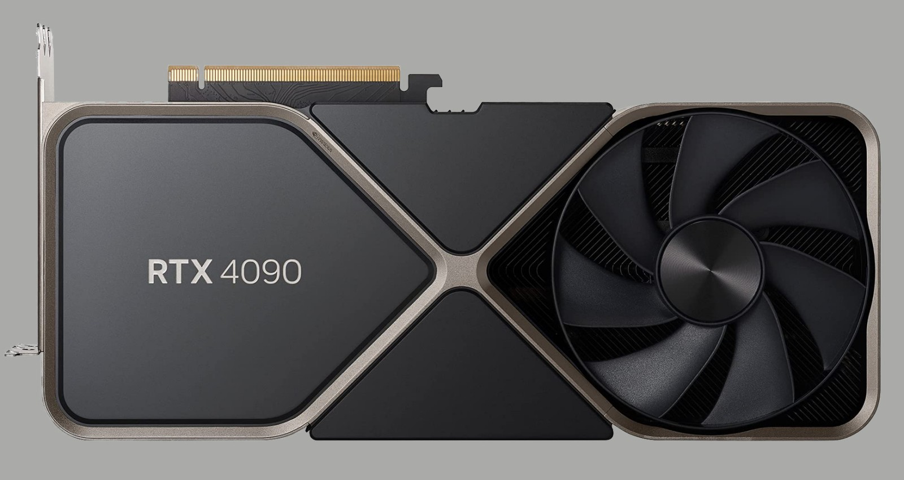
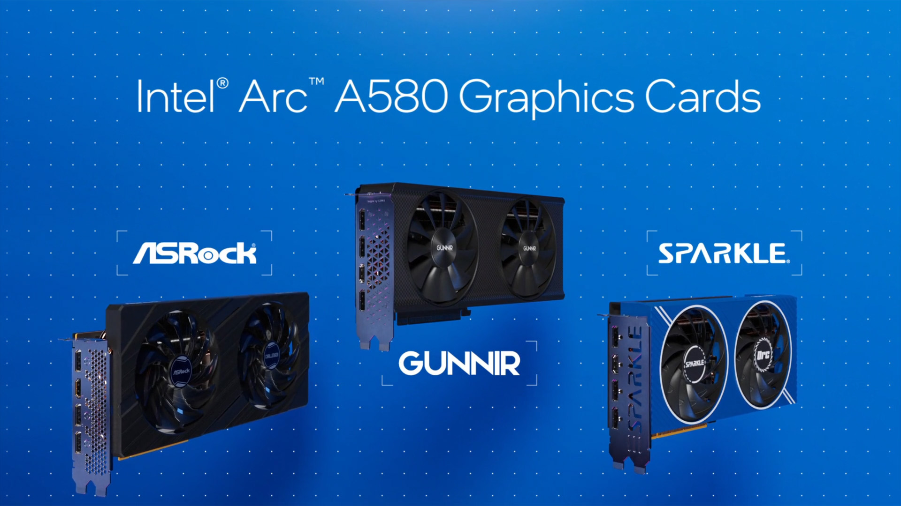
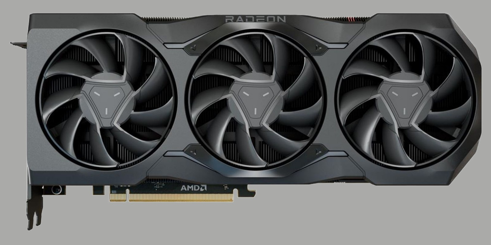
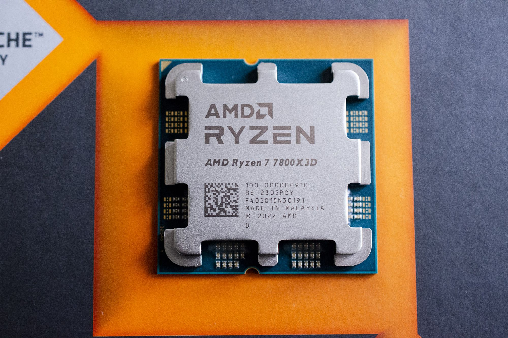

Видеокарты GeForce RTX 40: До 4 раз быстрее благодаря архитектуре RTX 3-го поколения и технологии NVIDIA DLSS 3
Благодаря новой сверхэффективной архитектуре RTX 3-го поколения, NVIDIA Ada Lovelace, видеокарты GeForce RTX 40 обеспечивают запредельную скорость,
предоставляя геймерам и авторам контента качественный скачок в производительности, графику на базе искусственного интеллекта, более захватывающий игровой процесс и
самые быстрые рабочие процессы создания контента.Производительность в новейших играх увеличивается до 2 раз, а с помощью DLSS 3 и новых инноваций Ada разработчики
могут повысить производительность до 4 раз в играх с полной трассировкой лучей. В графических приложениях GeForce RTX 40 обеспечивает рост производительности
при 3D-рендеринге до 2 раз, высокую скорость экспорта видео, а также инструменты ИИ.

Видеокарту Intel ARC A580 за $180 испытали в играх и сравнили с GPU от NVIDIA и AMD
Intel выпустила «очень бюджетную» по нынешним меркам видеокарту ARC A580 — видеоускоритель уже успели назвать «лучшим дешевым GPU» при рекомендованной цене в $180.
Новинка оснащена 8 ГБ видеопамяти и 256-битной шиной, TDP составляет 185 ватт. ARC A580 успели протестировать в играх, ресурс PCGamesHardware поделился результатами,
а также сравнением с видеокартами от NVIDIA и AMD.Из тестов следует, что Intel ARC A580 обходит Radeon RX 6600 и Geforce RTX 3050, значительно уступая Geforce RTX 4090.
Последнее не является сюрпризом, это совсем иная категория как по характеристикам, так и цене.Правда, есть несколько «но»: Radeon RX 6600 вышла около двух лет назад, GeForce
RTX 3050 также не из самых свежих, она же удостоилась звания «Видеокарта для 1080p по завышенной цене» сразу после выхода. В то же время Intel ARC A580 выигрывает благодаря цене
(по крайней мере, на бумаге) и 256-битной шине, которую конкуренты не жалуют.Отличия Arc A580 от пары старших видеокарт подсемейства Arc A7 заключаются исключительно в меньшей производительности,
по функциональности она от них ничем не отличается. Более того, все три старшие видеокарты Intel используют один и тот же графический процессор ACM-G10, но в разных версиях — с разным количеством
активных исполнительных блоков. Если в топовой Arc A770 используется чип с 32 Xe-ядрами, то в Arc A750 были оставлены активными лишь 28, а в Arc A580 — и вовсе лишь 24 Xe-ядра. Соответственно снизилось
и количество почти всех остальных исполнительных блоков.

AMD Radeon RX 7900XTX
Настало время рассмотреть новую топовую видеокарту AMD — флагмана линейки. С семейством Radeon RX 7900 у нас всё получилось не так, как обычно: первой на обзор попала младшая из пары вышедших моделей —
Radeon RX 7900 XT, и именно в той статье мы максимально подробно рассказали об архитектурных изменениях RDNA3, как и о многом другом. Но верхняя модель линейки интересна уже хотя бы тем, что показывает максимум
на момент выхода, а в случае Radeon RX 7900, старшая XTX еще и получилась чуть выгоднее, если смотреть на разницу по производительности и рекомендованным ценам.Новые модели видеокарт основаны на третьем поколении
графической архитектуры — RDNA3, а графический процессор Navi 31 стал первым GPU, имеющим чиплетную конфигурацию из нескольких кристаллов на одной подложке, аналогично процессорам Ryzen. Чиплеты должны помочь
в достижении лучшей производительности при сохранении невысокой сложности при меньшей себестоимости по сравнению с монолитным кристаллом. Кэш-память Infinity Cache и контроллеры GDDR6-памяти были перенесены
на шесть маленьких кристаллов, которые производятся при помощи техпроцесса 6 нм, а основная часть GPU использует более совершенный техпроцесс 5 нм.

AMD представила «самые быстрые в мире» игровые процессоры
AMD представила на CES 2023 десктопные процессоры Ryzen 7 7800X3D с технологией кэширования V-Cache.
Они получили 8 ядер и 16 потоков — как у более старого Ryzen 7 5800X3D, однако максимальная тактовая частота выросла на 500 Гц — до 5 ГГц,
кэш — 104 МБ. Также в линейке, старт продаж которой запланирован на февраль, выходят процессоры Ryzen 9 7950X3D и 7900X3D.
Флагманский Ryzen 9 7950X3D использует 16 ядер (32 потока), TDP составляет 120 Ватт, кэш L2 и L3 — 144 МБ (общий), тактовая частота в бусте — до 5,7 ГГц.
У 7900X3D — 12 ядер (24 потока), частота — до 5,6 ГГц, кэш — 140 Мб, TDP — те же 120 Ватт. AMD позиционирует новые процессоры как идеальное решение для геймеров и креаторов.
